Installation
IBLM can be installed from CRAN or GitHub:
# From CRAN
install.packages("IBLM")
# From GitHub
remotes::install_github("IFoA-ADSWP/IBLM")Introduction
IBLM stands for “Interpretable Boosted Linear Model”.
An IBLM is essentially a hybrid model consisting of two components:
Generalised Linear Model (GLM) - fitted to the training data
Booster Model1 - fitted to the residuals of the training data against GLM predictions in step 1.
The purpose of this article is to show you how to use IBLM to train, explain and predict using functions from this package.
Theory
The overall process for fitting and interpreting an IBLM is as follows:
Step 1: Fit a GLM
Where g(·) is the link function, μ is the expected value of the response, and β values are your standard regression coefficients.
Where β values are your standard regression coefficients.
Step 2: Train a Booster on GLM’s Errors
Train a booster model (i.e. XGBoost) on the residuals of the actual response values against the GLM predictions.
Step 3: Use SHAP to Break Down the Booster
SHAP decomposition allows the booster’s prediction to be apportioned into contributions from each feature:
Where is how much feature j contributed to a specific prediction.
Step 4: Convert SHAP Values to Beta Coefficient Corrections
Transform each SHAP contribution into beta corrections:
There are two situations where the value of is set to zero and the value for is added to the intercept instead. This is when is a numerical variable, and the value is zero. Or, when is a categorical variable, and the value is that of the reference level2.
Step 5: Combine
The final IBLM can be interpreted as a collection of adjusted GLMs. Each row of the data will essentially have its own GLM coefficients. These are the addition of:
The GLM coefficients derived in step 1, which are the same for all rows
The beta corrections derived in step 4, which are unique to that predictor variable combination.
or
Where g(·) is the link function, μ is the expected value of the response, and β values are your standard regression coefficients.
The IBLM prediction is a combination of components.
This preserves the familiar GLM form while incorporating the booster’s superior predictive power.
Train
To train an IBLM we must get our data into an appropriate format. In
this document our demonstrations will be completed using French motor
claims dataset freMTPL2freq. For simplicity, we will drop
the “Exposure” column and assume all rows carry equal weight. In
practice however this should be allowed for either through choice
weight_var or offset_var (see Weights and
Offsets).
Data for training an IBLM model must be in the form of a list of 3
dataframes. These will be named “train”, “validate” and “test”. The
function split_into_train_validate_test() can conveniently
split a single dataframe into such a structure.
freMTPL2freq <- load_freMTPL2freq()
df_list <- freMTPL2freq |>
select(-Exposure) |>
split_into_train_validate_test(seed = 1)There is currently only one function available to train an IBLM. This
is train_iblm_xgb() which will use xgboost as the booster
model. This performs steps 1 and 2 of the Theory.
The output is of class “iblm”. Objects of this class contain two
component models “glm_model” and “booster_model”. There are also other
items containing information (see Value section of
train_iblm_xgb() for more information).
iblm_model <- train_iblm_xgb(
df_list,
response_var = "ClaimNb",
family = "poisson",
params = list(seed = 1)
)
class(iblm_model)
#> [1] "iblm"For convenience, it is also possible to train an XGBoost model using the same settings that were used for you model of class “iblm”. This can be useful when directly comparing (for example see Pinball Score)
xgb_model <- train_xgb_as_per_iblm(iblm_model)
is_identical_config <- purrr::map2_lgl(
xgboost::xgb.config(xgb_model) |> unlist(),
xgboost::xgb.config(iblm_model$booster_model) |> unlist(),
identical
)
# the config is mostly identical. In our example the differences are:
is_identical_config[!is_identical_config] |> names()
#> [1] "learner.gradient_booster.gbtree_model_param.num_trees"Explain
Code to explain and interpret an object of class “iblm” are
conveniently wrapped in the explain_iblm() function. This
performs steps 3, 4 and 5 of the Theory. The
values derived are all based on the data fed in, which would usually be
the test portion of your dataset.
The following line is all that is required:
ex <- explain_iblm(iblm_model, df_list$test)The output object is a list containing the following items:
beta_corrected_scatter Function to create scatter plots showing SHAP corrections vs variable values (see
beta_corrected_scatter())beta_corrected_density Function to create density plots of SHAP corrections for variables (see
beta_corrected_density())bias_density Function to create density plots of SHAP corrections migrated to bias (see
bias_density())overall_correction Function to show global correction distributions (see
overall_correction())shap Dataframe showing raw SHAP values of data records. These are the values described in step 3 of Theory.
beta_corrections Dataframe showing beta corrections (in wide/one-hot format) of data records. These are the and values described in step 4 of Theory.
data_beta_coeff Dataframe showing corrected beta coefficients of data records. These are the and values described in step 5 of Theory. For categorical variables, the value corresponds to the relevant coefficient for that datapoint.
Many of the items output are functions. The functions can then be called to observe the components of the “iblm” object in different ways.
Beta Corrected Density
The corrected beta coefficients (β’ⱼ) can be observed in a density plot. This plotting function allows the user to see corrected beta coefficient values for a particular variable.
The density plot also shows the standard error for the original beta coefficient, fitted in the GLM model component. This can be useful to understanding the significance of the range in corrected beta coefficients.
ex$beta_corrected_density(varname = "VehPower")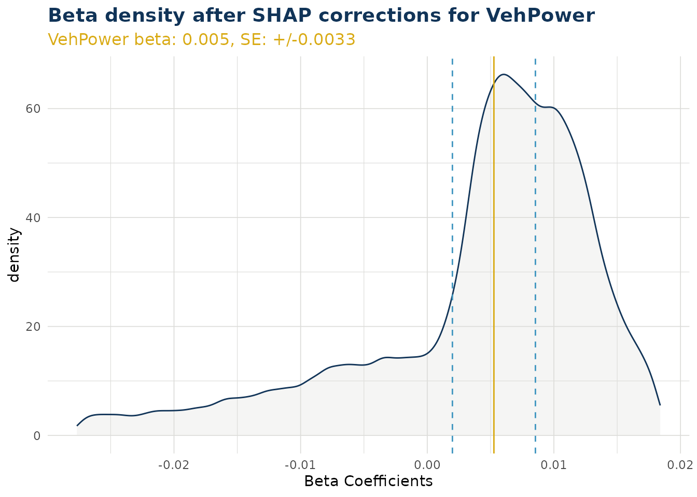
ex$beta_corrected_density(varname = "VehAge")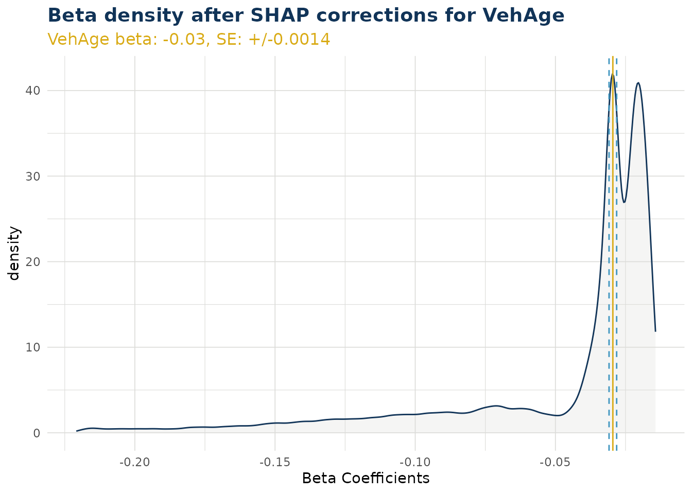
ex$beta_corrected_density(varname = "DrivAge")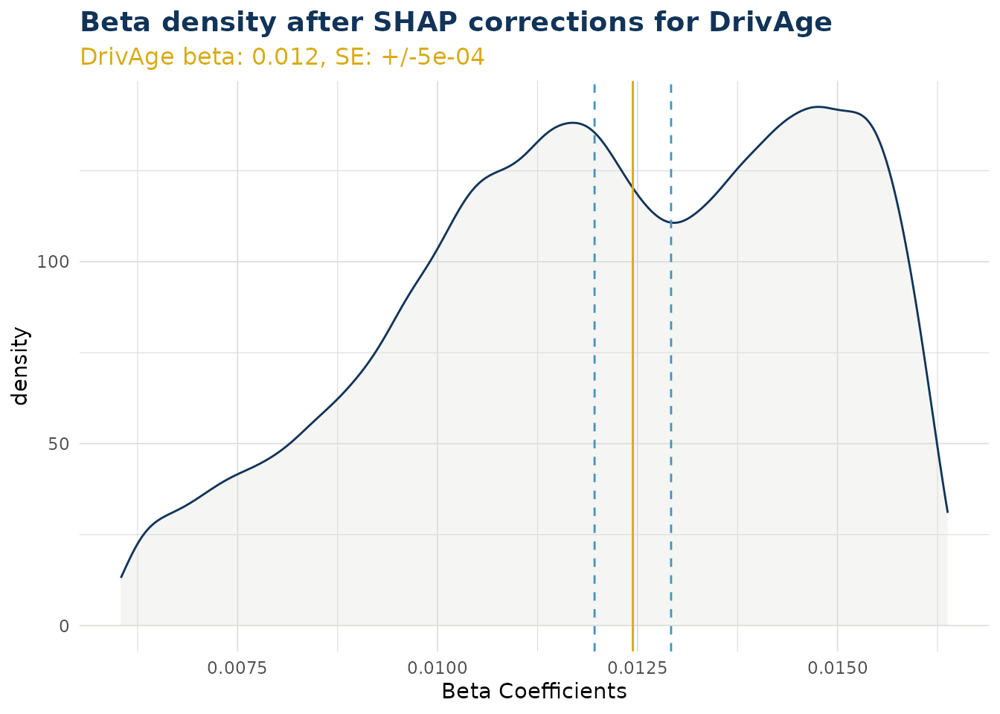
ex$beta_corrected_density(varname = "BonusMalus")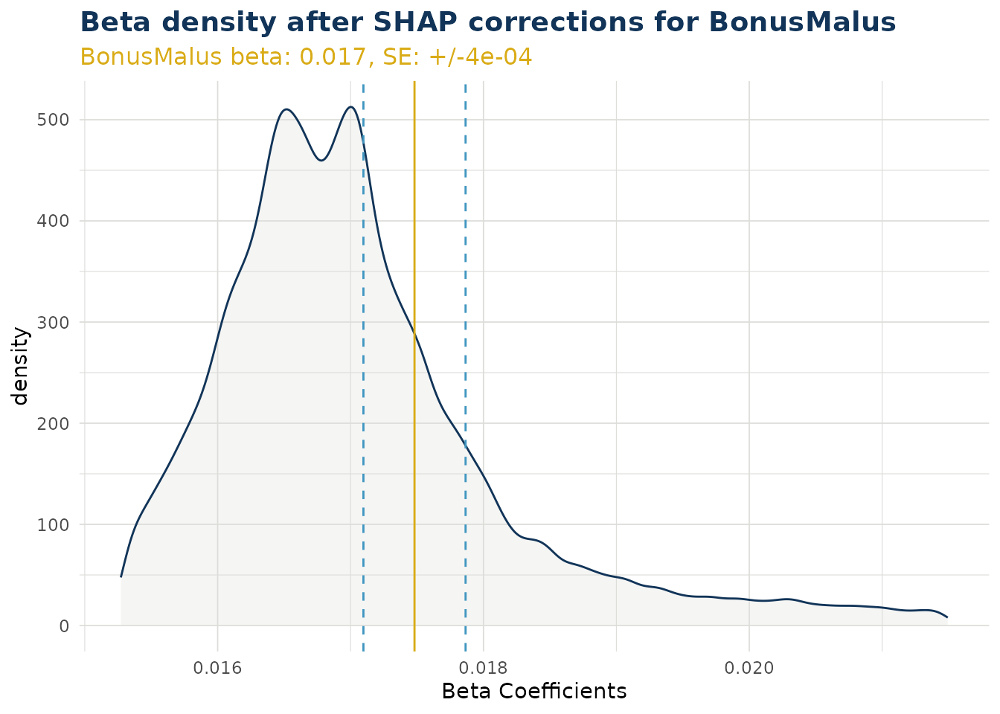
Categorical Variables
For categorical variables, calling the function creates a list of ggplot objects. A separate plot is produced for each level of that categorical variable. Note this does not include the reference level.
In the example below “VehBrand” has 11 levels and produces 10 plots. Level “B1” was a reference level and does not have a beta coefficient within the GLM component. Instead, for “B1”, the SHAP values are migrated to the bias (see Bias Corrected Density). Also in the example, we have wrapped our list using patchwork to create a single graphic for simplicity.
VehBrand <- ex$beta_corrected_density(varname = "VehBrand", type = "hist")
VehBrand |> patchwork::wrap_plots(ncol = 2) 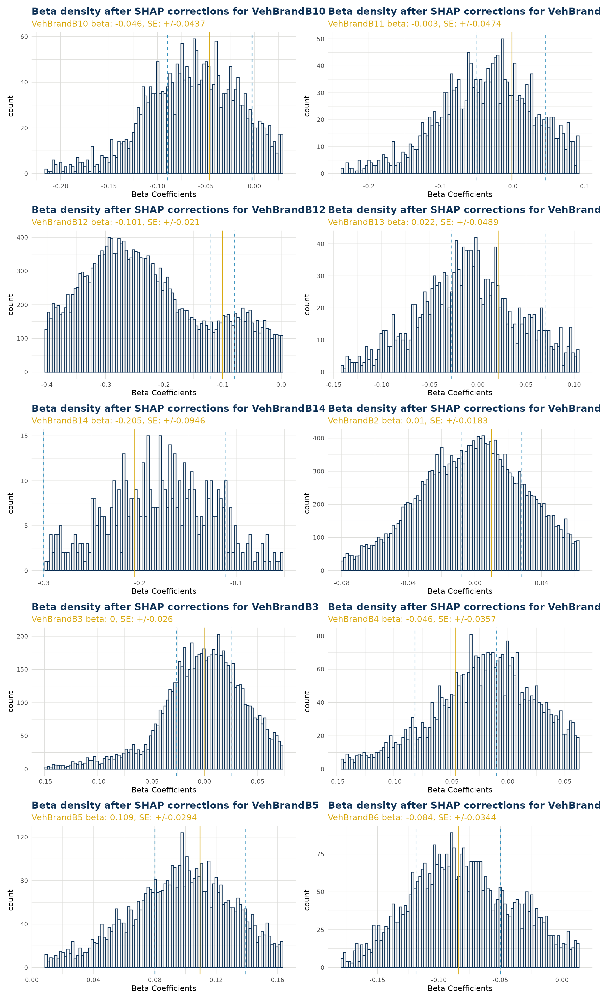
Beta Corrected Scatter
The corrected beta coefficients (β’ⱼ) can be observed in a scatter plot (or boxplot). This plotting function allows the user to see corrected beta coefficient values for a particular variable and the relationship to that particlar variable value.
Numerical Variables
When varname is set to a numerical variable, a scatter plot is produced. The example below shows the relationship of corrected beta coefficient values against driver age. Note that the original beta coefficient fitted to the GLM component is shown by a dashed black line (and stated near the top of the plot in orange). We can see that corrected beta coefficients can be materially different. There is also a smoothed trend line fitted that shows the overall pattern of correction.
Note the color argument can also be set to try and observe interactions with a second variable.
ex$beta_corrected_scatter(varname = "DrivAge", color = "VehPower")
#> `geom_smooth()` using method = 'gam' and formula = 'y ~ s(x, bs = "cs")'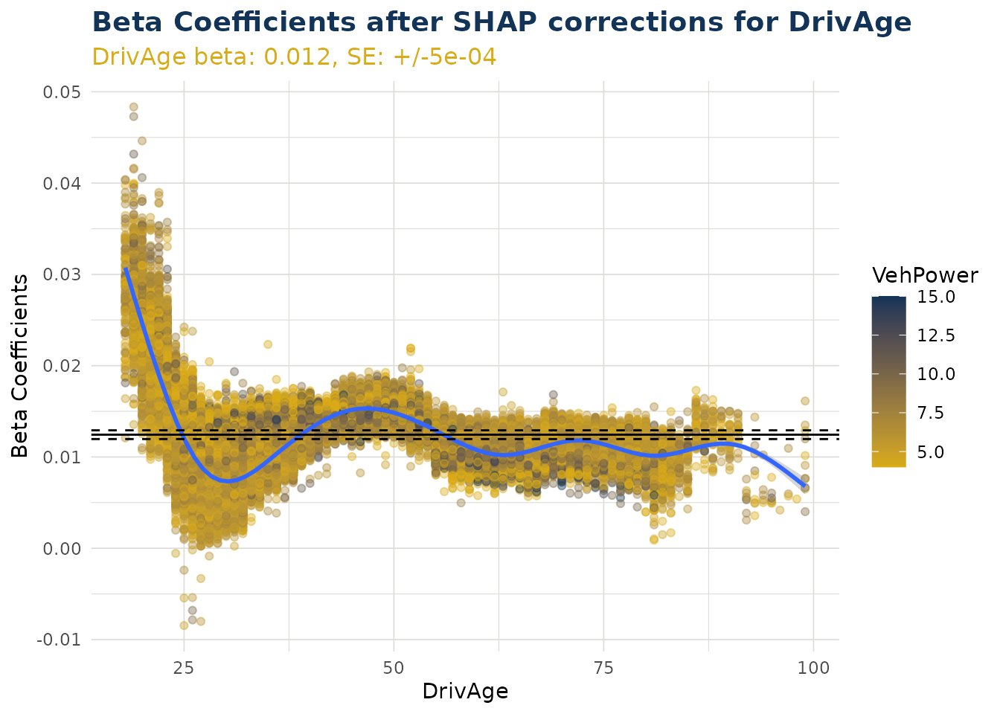
Categorical Variables
When varname is set to a categorical variable, a boxplot is produced. This shows the distribution for each individual level within that categorical variable.
Note the color argument can also be set to try and observe interactions with a second variable.
ex$beta_corrected_scatter(varname = "VehBrand")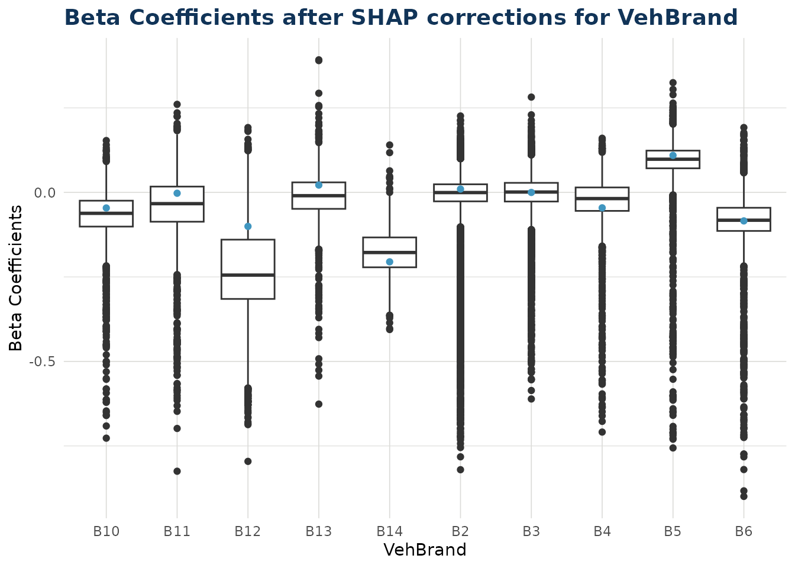
Bias Corrected Density
As described in step 4 of Theory, some shap values cannot be translated to beta corrections. These values are instead migrated to the bias. There are two situations where this can occur:
- Numerical variable where the value was zero for that data point.
- Categorical variable where the value was the reference level for that data point.
In the bias_correction_var plot we visualise all the
individual times this occured in our test dataset. For categorical
variables Area, Region, VehBrand and VehGas the total counts in the
repsective facets of the histogram will equal the total occurences of
the reference level for that variable. For numerical variable VehAge the
total count in that facet will equal the total occurences of zero for
VehAge in the dataset. Other numerical variables are dropped from the
plot as they had no instances of zero value (for example DrivAge)
The bias_correction_total plot is the cumulative sum of
these components across each data point. Note any data point with no
bias migration (i.e. conditions 1 and 2 do not occur) will have the
standard bias adjustment and is not counted in the plot. The standard
bias value, along with standard error around this, can be observed as
the straight blue line and dashed orange lines either side.
The bias values can be observed with bias_density().
bias_corrections <- ex$bias_density()
bias_corrections$bias_correction_var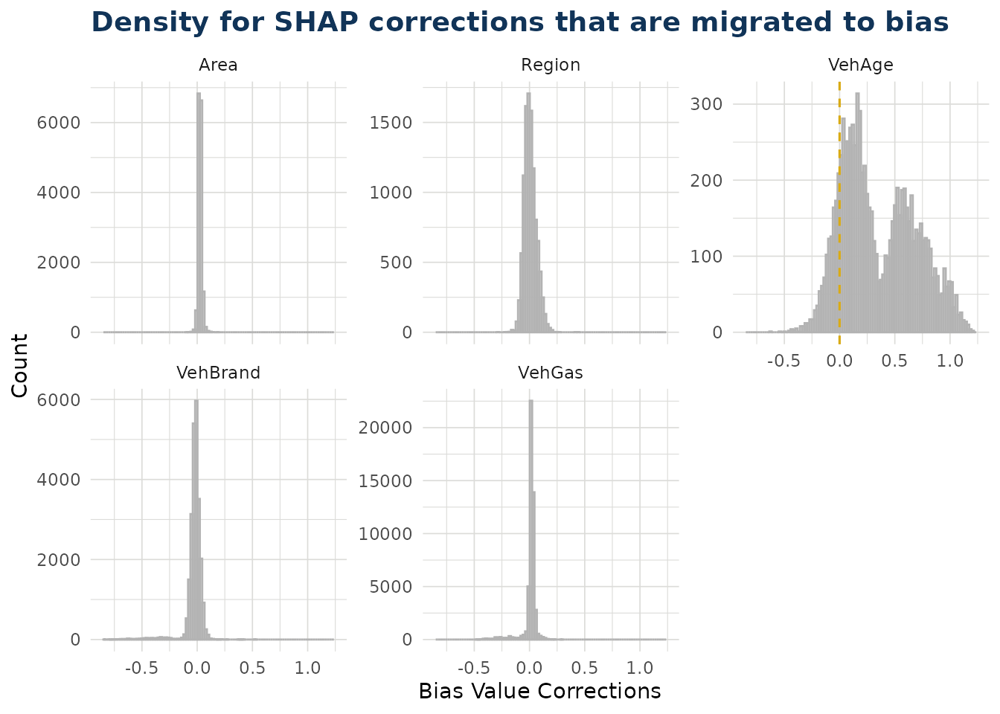
bias_corrections <- ex$bias_density()
bias_corrections$bias_correction_total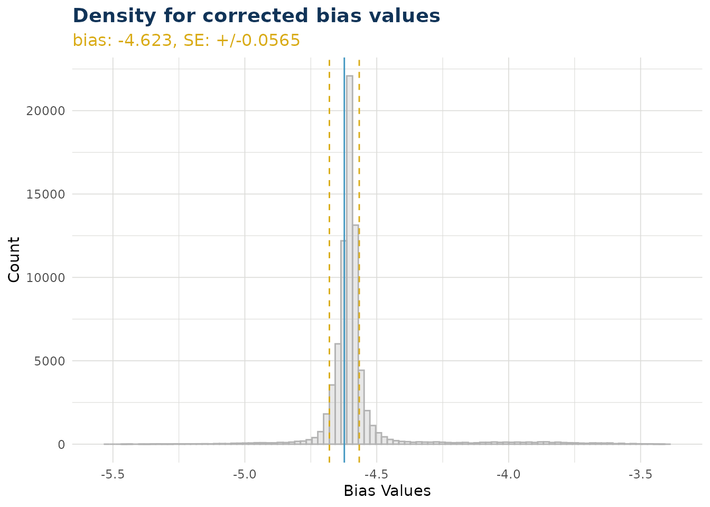
Overall Correction
The distribution of overall corrections across your test data can be observed. If the link function is log then the correction is a multiplier (as is the case below). If the link function is identity, then the overall correction is an addition. By default the x scale is transformed by the link function, but this can be switched off.
ex$overall_correction()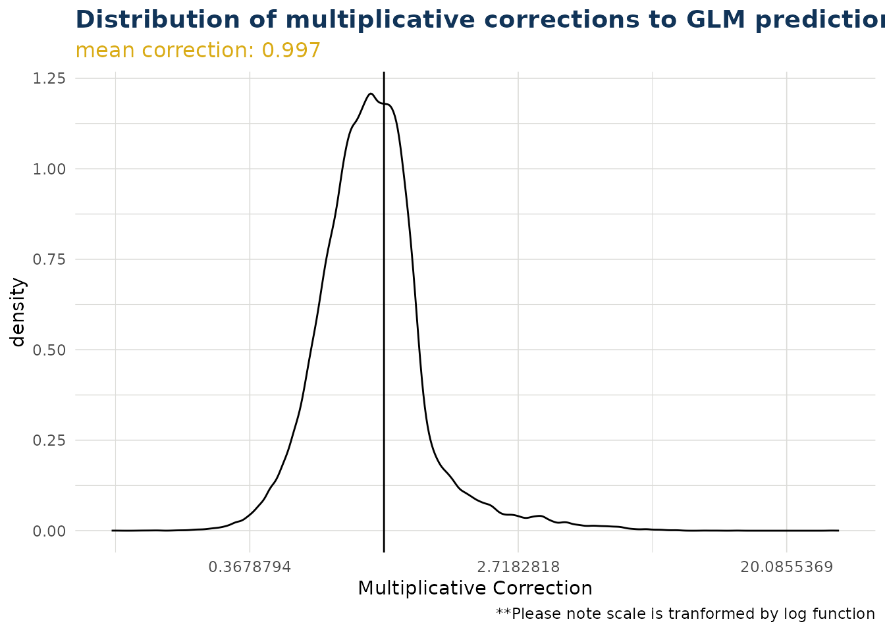
ex$overall_correction(transform_x_scale_by_link = FALSE)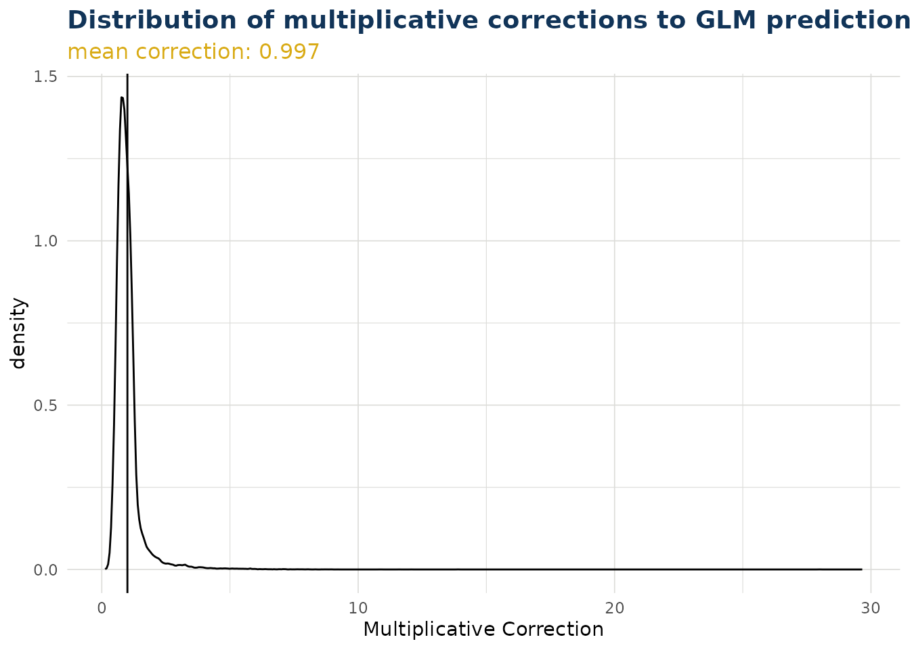
Predict
The package contains a predict method for the class “iblm”. This
employs the predict() method of both the “glm_model” and
“booster_model” items within the “iblm” class object.
predictions <- predict(iblm_model, df_list$test)The predict method contains an option to trim. This truncates the values of the booster model predictions to prevent extreme deviation from the foundation GLM. This is explored further in Correction Corridor.
Because IBLM is essentially a collection of GLMs, and the corrected
beta coefficients are derived by the explain_iblm()
function, it is also possible to predict through linear calculation.
coeff_multiplier <-
df_list$test |>
select(-all_of(c(iblm_model$response_var, iblm_model$weight_var))) |>
mutate(
across(
all_of(iblm_model$predictor_vars$categorical),
~1
)
) |>
mutate(bias = 1, .before = 1)
predictions_alt <-
(ex$data_beta_coeff * coeff_multiplier) |>
rowSums() |>
exp() |>
unname()
# difference in predictions very small between two alternative methods
range(predictions_alt / predictions - 1)
#> [1] -1.107509e-06 8.825406e-07Pinball Score
The pinball score is a way to measure the performance of the models. It shows the increase (or decrease when negative) of predictability compared to using the training data mean instead.
In the example below, we see the iblm has increased score compared to the glm. We have also added the xgb_model (derived in section Train) as a further comparison.
get_pinball_scores(
data = df_list$test,
iblm_model = iblm_model,
additional_models = list(xgb = xgb_model)
) |>
gt() |>
fmt_percent("pinball_score")| model | poisson_deviance | pinball_score |
|---|---|---|
| homog | 0.3263248 | 0.00% |
| glm | 0.3198652 | 1.98% |
| iblm | 0.3059705 | 6.24% |
| xgb | 0.3053881 | 6.42% |
Correction Corridor
As described in Predict it is possible to trim the contribution from the booster component of an iblm object when predicting. This prevents estimates deviating too far from the GLM foundational model.
The correction corridor function applies predict.iblm()
with different settings of trim, and plots the results. It is also
possible to set the color to a variable to observe any patterns. Note
that when the trim value is zero, the IBLM predictions are the same as
the GLM predictions.
correction_corridor(
iblm_model,
df_list$test,
trim_vals = c(0.5, 0),
sample_perc = 0.1,
color = "DrivAge")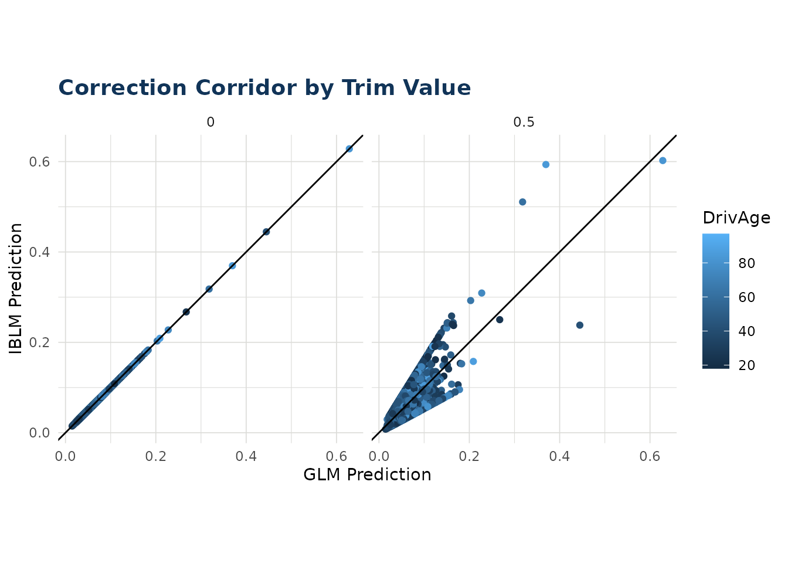
Offsetting and Weighting
In the examples above using freMTPL2freq, we dropped the
“Exposure” column and treated each row equally. However, in reality we
would want to account for the fact that some periods carry more weight
than others. We can do this either through use of “offset_var” argument,
or “weight_var”.
Offsetting
The principal of offsetting in iblm works similar to offsetting in
glm. Any offset specified get incorporated only into the
glm_model and not the booster_model
component.
For a poisson distribution we can implement offsetting to place more value on those rows with greater Exposure.
To do this when training the iblm object, it is necessary to create a column in your data for the offset. For poisson, quasipoisson, gamma or tweedie this must be in a log transformed format. Note to take care to drop unnecessary columns before training, in this case the Exposure column once used.
# Note that in preparing df_list we have log-transformed our Exposure column. Take care to drop any unneeded columns (in the case `Exposure`)
df_list_offset <- freMTPL2freq |>
mutate(LogExposure = log(Exposure)) |>
select(-Exposure) |>
split_into_train_validate_test(seed = 1)
iblm_model_offset <- train_iblm_xgb(
df_list_offset,
response_var = "ClaimNb",
offset_var = "LogExposure",
family = "poisson",
params = list(seed = 0)
)By adding an “offset_var” the iblm object will now have a “offset_var” field. The glm_model was fitted with this offset. The booster model is based on the residual of glm predictions and responses, therefore the offset is implicitly applied in the booster model training as a result, but not explicitly included.
When using the explain or predict tools of iblm, the functions will account for this offset_var. If one is not included in testing data, an offset of zero is assumed:
# to not include offset in prediction (recommended for Poisson rate predictions) set `offset_var` to zero
predict_offset_a <- predict(iblm_model_offset, df_list_offset$test |> dplyr::mutate(LogExposure = 0) )
# ...or simply drop the column from the data and it is treated as zero
predict_offset_b <- predict(iblm_model_offset, df_list_offset$test |> dplyr::select(-LogExposure ))
#> 'iblm' object was fitted with offset LogExposure but none found in data. Offset
#> assumed to be zero.
identical(predict_offset_a, predict_offset_b) # TRUE
#> [1] TRUEIf you leave the “offset_var” in the data, the predictions will be based on this:
# to not include offset in prediction (recommended for Poisson rate predictions) set `offset_var` to zero
predict_offset_a <- predict(iblm_model_offset, df_list_offset$test |> dplyr::mutate(LogExposure = 0) )
# if you leave the offset_var in the test data, the prediction will be based on this offset.
predict_offset_c <- predict(iblm_model_offset, df_list_offset$test )
identical(predict_offset_a, predict_offset_c) # FALSE because predict_offset_c values are based on LogExposure column of test data, whereas predict_offset_a values assumed LogExposure = 0 (i.e. Exposure = 1).
#> [1] FALSENote the same applies for other prediction functions, such as
get_pinball_scores() and
correction_corridor().
Weighting
An alternative is to use the weight feature. Note that for this to work, our response variable must be the ClaimRate and not ClaimNb.
# Note that in preparing df_list we have set the response_var to ClaimRate, and are setting weight_var to Exposure. Take care to drop any unneeded columns (in the case `ClaimNb`)
df_list_weight <- freMTPL2freq |>
mutate(ClaimRate = ClaimNb / Exposure) |>
select(-ClaimNb) |>
split_into_train_validate_test(seed = 1)
iblm_model_weight <- train_iblm_xgb(
df_list_weight,
response_var = "ClaimRate",
weight_var = "Exposure",
family = "quasipoisson",
params = list(seed = 0)
)By adding an “weight_var” the iblm object will now have a “weight_var” field. Both the glm_model and booster model were fitted with this weight applied. When using the explain or predict tools of iblm, the functions will not use any weight_var left in the data.
# `weight_var` is ignored in predict.iblm()
predict_weight_a <- predict(iblm_model_weight, df_list_weight$test )
# ...or simply drop the column from the data and it is treated as zero
predict_weight_b <- predict(iblm_model_weight, df_list_weight$test |> dplyr::select(-Exposure ))
identical(predict_weight_a, predict_weight_b) # TRUE
#> [1] TRUENote that for get_pinball_scores() the weight_var is
considered when present. When it is not present, an equal weight of 1 is
assumed for each row. Therefore leaving the weight var in the data can
yield different scores. It is recommended you include weight_var if
available.
# `weight_var` is ignored in predict.iblm()
ps_weight_a <- get_pinball_scores(df_list_weight$test , iblm_model_weight)
# ...or simply drop the column from the data and it is treated as zero
ps_weight_b <- get_pinball_scores(df_list_weight$test |> dplyr::select(-Exposure), iblm_model_weight)
#> Column Exposure not found in `data`. Weight of 1 assumed.
identical(ps_weight_a, ps_weight_b) # FALSE because total poisson_deviance is weighted for `ps_weight_a` but not `ps_weight_b`
#> [1] FALSE